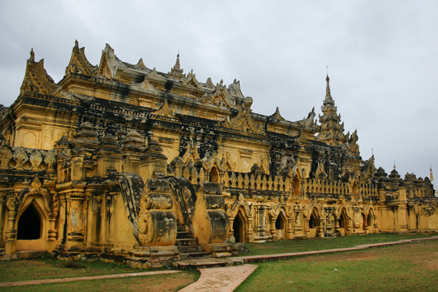

Tourist Spots and Places to visit in Myanmar
We make lists of the most popular and attractive tourist spots and places to visit in Myanmar with some respective information. Check them out by clicking each detail buttons and make the inquiry which you are interested in.
Contact us if you still wonder where to go in Myanmar or which places would be the best for you to enjoy and explore. Since we have been in this travel and tour industry for years, we can surely pick the best destination for you based on your interest and budget.
Yangon
Walk the streets of old Yangon to see leafy lanes and byways filled with enormous…
View DetailBago
Bago is renowned for a 55-metre-long reclining Buddha image, the beautiful golden …
View Detailtwante
A small town that is well known for its pottery industry and cotton weaving, as well as…
View Detailthanlyin

Thanlyin is situated at the confluence of the Yangon and Bago Rivers. To the south of…
View Detailbagan
Bagan is one of the richest archaeological and historical sites in Asia, featuring more than …
View Detailmount popa
Mount Popa is an extinct volcano and at 1500 meters is the highest point in the Bago …
View Detailsalay
Visitors to Bagan often make the 40-kilometre trip south to visit Salay, an ancient town…
View Detailmandalay
Mandalay is the second-largest city in Myanmar and situated in the hot and dry central region…
View Detail
amarapura

Amarapura is a southern suburb of Mandalay and lies on the east bank of the Ayeyarwady River….
View Detailinnwa
Also known as Ava, Innwa is located 20 kilometers southwest of Mandalay across the Myitnge…
View Detailmingun

Located across majestic Ayeyarwady River, about 12 kilometers north of Mandalay, Mingun…
View Detailmonywa
Monywa lies on the banks of the Chindwin River, about 140 kilometers northwest of Mandalay…
View Detailpyin oo lwin
At more than 1000 meters above sea level, Pyin Oo Lwin is a popular hill station about…
View Detailinle lake

Inle Lake is roughly 20 kilometers long and an outstanding natural and cultural attraction…
View Detaillalaw
Kalaw was a favorite hill station during the colonial era and today is a picturesque….
View Detailpindaya
Pindaya is situated at about 1,200 meters above sea level and is surrounded by hill tribe…
View Detailtaung gyi

Taunggyi is the capital of Shan State and has a population of approximately 200,000, making..
View Detail